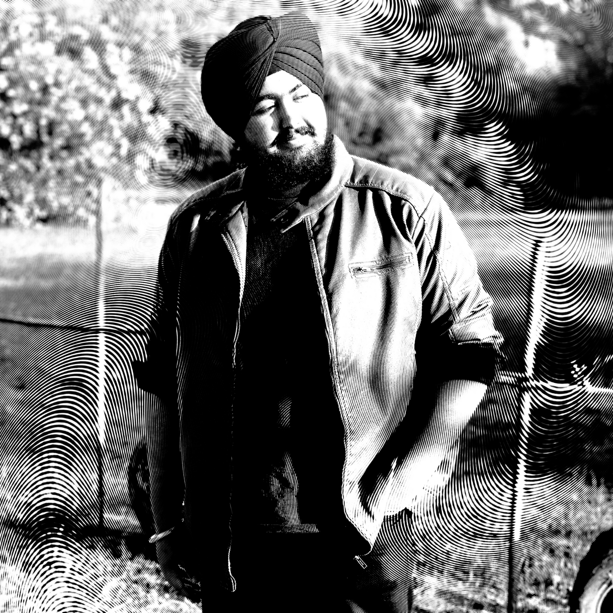

I am a California / Jammu based music producer. I make all kinds of Hip-Hop music including Drill, Dancehall and many others but I also incline towards RnB and Lo-Fi. ... I started working on music in 2020 in my 2nd year of college. I have since then made dozens of tracks, comprising of many genres. I've personally grown up on a lot of Bollywood, Punjabi Music and 2000-2010s Hip-Hop which serve as my inspiration for a lot of my music. My top 5 Hip-Hop albums of all time are: Get Rich Or Die Trying, The Eminem Show, Still Here, Good vs Evil, Kamikaze. Some of my favorite artists currently are Kr$na, Sidhu Moosewala, SamaChaar, Eminem, KXNG CROOKED and The Game. See below to check out some of my music.
Here's the link to a song I produced, called 'Kaise Samjhau', by Shunya from his EP 'Adhuri Baatein)'.
It is a melodic Lo-Fi track where Shunya is speaking his heart out in memory of his lover.
Check It Out !
Here are some of my Beats:


My name is Amandeep Singh, you can call me Ace. Apart from making music, I am also a Computer Science Student at UCSC.
Fun Fact: I made this webpage myself!
I was born in Jammu, India (i.e. The Best Place In The World, I'm biased that way)
I've grown up playing a lot of videogames, sports and reading a lot of books and I still do a lot of that. In fact, Here's a link to my GoodReads. Suggest me some good books.
As for gaming, I'm currently playing Elden Ring or as I like to call it, Kill Me Already.
And as for the sports, I'm backing MI in this edition of the IPL just like everytime.
Some of my other interests include philosophy, comedy, sunsets. Yep, that's it.
And here, is what I look like in case you want to make memes(Go at it.)

Amandeep Singh, circa 2020, b/w
Just before having an ATV accident